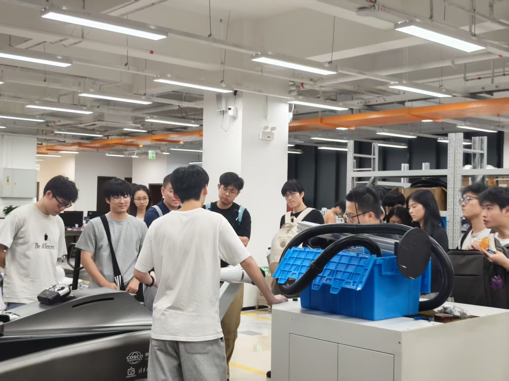
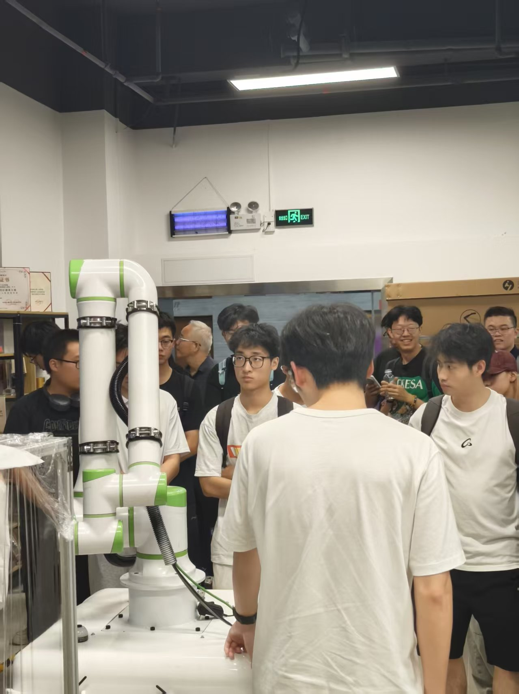
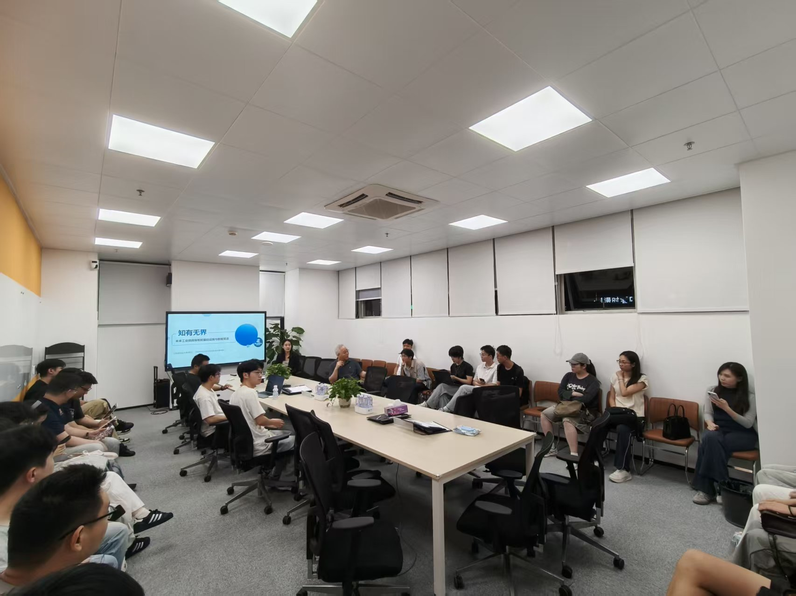
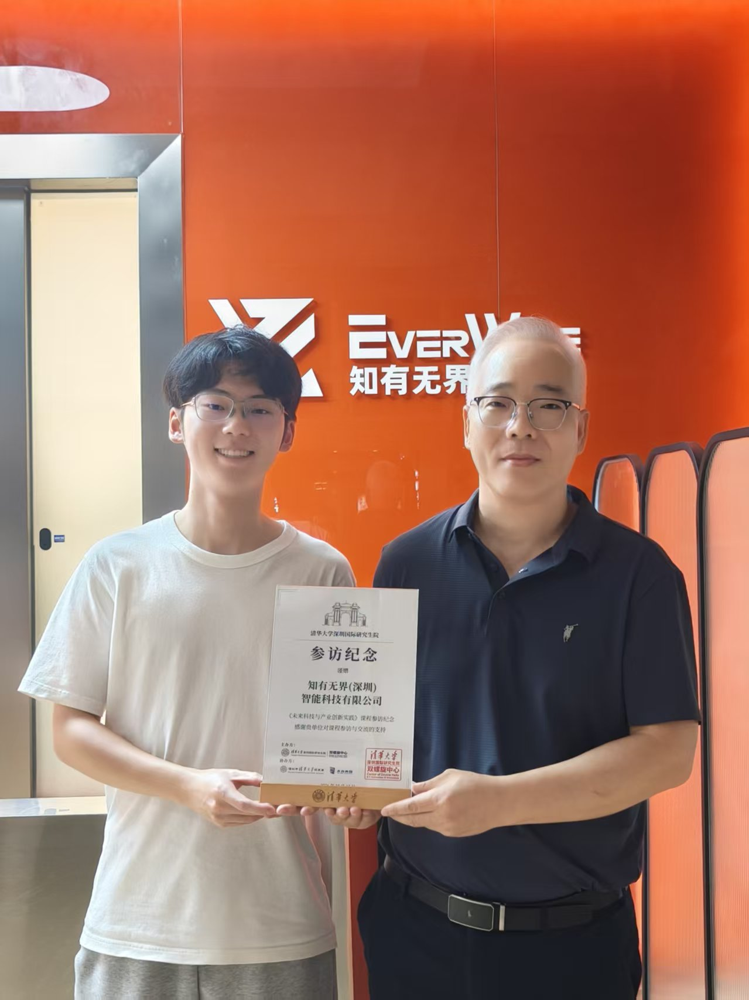
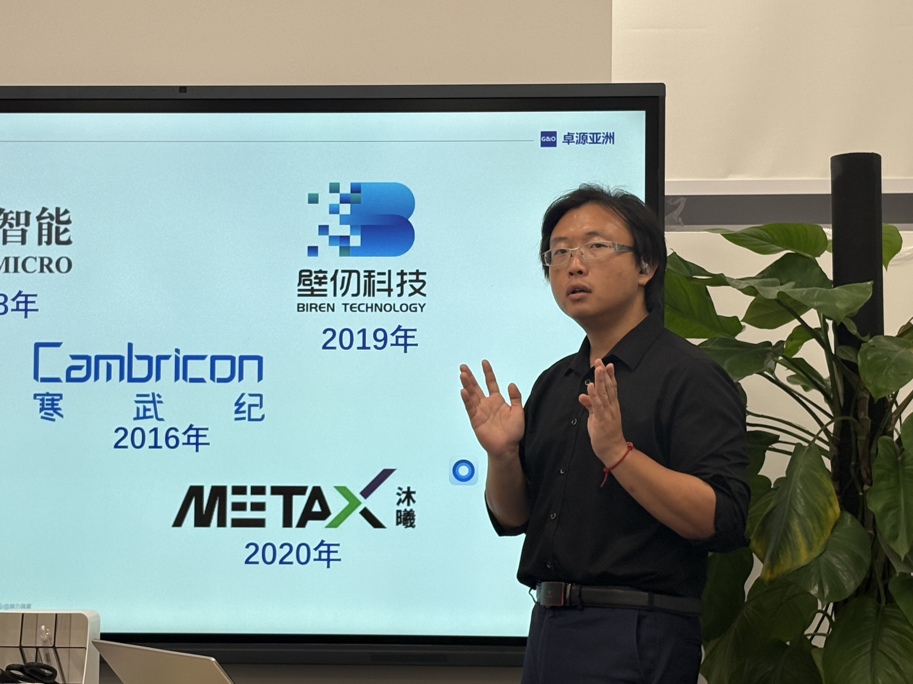
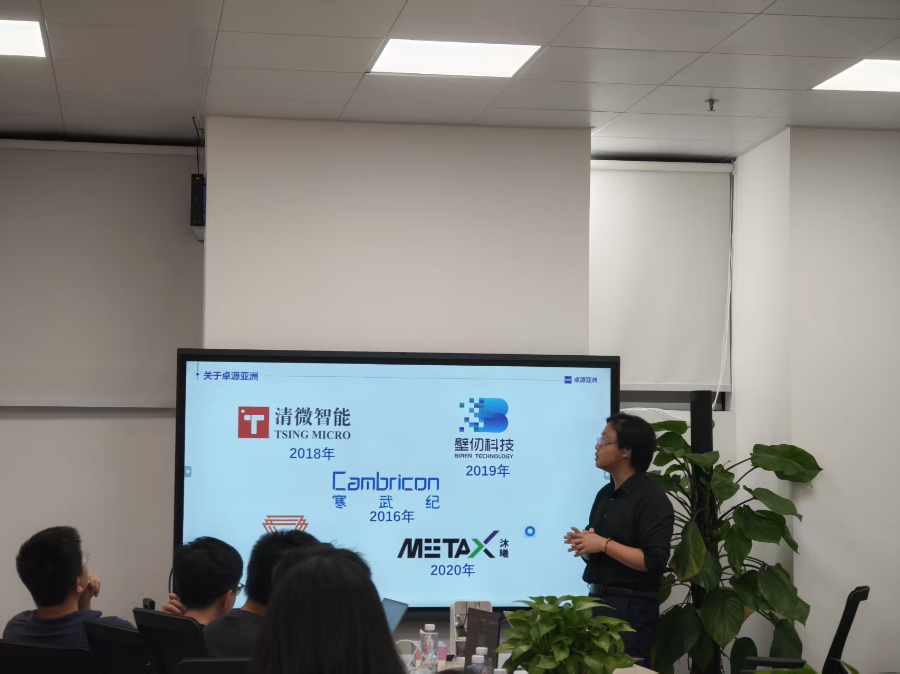
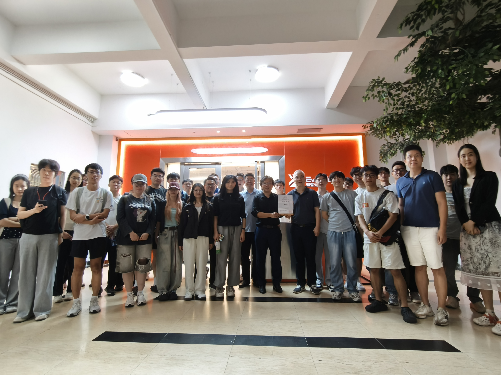
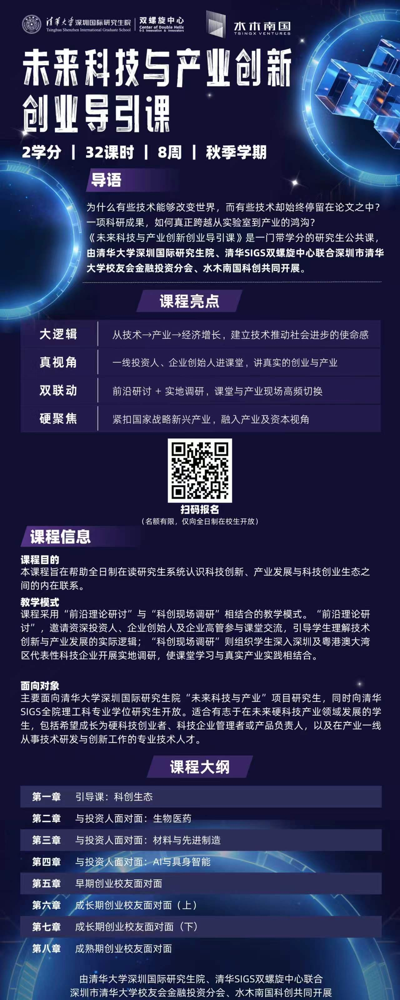

课程回顾｜未来科技与产业创新创业导引课第四课
10月13日，由深圳市清华大学校友会金融投资分会协办的《未来科技与产业创新实践》迎来第四课。本次课程聚焦“AI与具身智能”，将企业参访与校友分享相结合。
下午，同学们走进知有无界（深圳）智能科技有限公司，了解面向具体作业场景的机器人研发；晚间，卓源亚洲创始合伙人、董事长兼CEO林海卓学长带来专题分享，与大家共同探讨AI产业的发展趋势与长期机会。
从实际任务出发，理解机器人研发
下午，在知有无界CTO高颢嘉与投融资事务经理沈冰聪的带领下，同学们首先了解公司现有产品，随后走进研发现场，近距离观察机械臂及相关设备，听取企业团队的讲解。

此次参访重点关注了企业围绕具体场景开展的研发工作，包括面向物流搬运“最后一公里”的大型机械臂，以及服务定制化喷漆需求的一体化机械臂等。同学们的观察由产品本身延伸至产品所要完成的任务，对具身智能如何与实际作业需求相结合有了更直观的认识。

随后，师生来到会议室，听取高颢嘉对公司的介绍。同学们围绕具身智能行业中自己关心的问题踊跃提问，高颢嘉结合企业实践作出回应。从设备旁的讲解到会议室里的交流，参访为同学们提供了直接了解企业研发与行业发展的机会。

参访结束后，课程指导老师弥胜利老师向高颢嘉颁发参访证书，感谢知有无界团队对本次课程的支持。

在产业长周期中理解技术方向
晚间，林海卓学长以《未来十年AI投资的关键领域》为题展开分享。结合人工智能与半导体领域的投资经历，他从科技企业的成长历程谈起，将技术选择放在产业演进的背景下观察，为同学们思考研究方向、职业发展与创新创业提供参考。

看见AI应用背后的基础设施
围绕存储、光通信、电力与半导体制造等方向，林海卓学长介绍了模型训练、推理和应用扩展背后的基础设施需求。分享将视野从模型与应用延伸至支撑它们运行的产业环节，帮助同学们从更完整的产业链中理解技术机会。
他也谈到，相关企业需要的能力并不限于芯片与器件研发，软件开发、算法优化、系统调度和测试同样是重要环节。对于不同专业的同学而言，认识AI产业，可以从梳理自身所长与这些具体需求的联系开始。

在工业现场，理解产品的竞争力
下午参访过的知有无界，也成为晚间讨论的具体案例。有同学进一步追问，企业的竞争力究竟来自哪里。林海卓学长从投资观察出发，谈到深入工业现场、打磨软硬件产品和积累工程经验的重要性。
作业环境中的布线、设备运行、工序衔接和客户要求，都会对产品设计提出新的考验。团队需要在反复测试与反馈中调整方案，使算法、硬件与工程实施相互配合。围绕真实需求持续改进产品，是理解具身智能企业成长的重要角度。
这一讨论为下午看到的设备补充了产业视角：一款产品的形成，既需要技术研发，也离不开对作业现场的深入理解，以及长期的工程实践。
从行业认识，走向自己的研究与选择
交流中，同学们结合研究和实习经历，将问题落到了具体工作上。有同学关注光电器件如何从实验室演示走向系统产品，也有同学围绕具身智能数据采集，询问工程交付与长期能力积累之间的关系。
针对这些问题，林海卓学长谈到器件组合、供应链协同、管理与测试的重要性，并提醒同学们关注工具的标准化，以及经验和方法能否在不同场景中复用。理解一个技术点，也要思考它如何与其他环节共同构成可靠的产品；完成一项实践任务，也要关注其中能够持续积累的专业能力。
课程最后，师生与嘉宾共同合影留念，为第四课留下纪念。

从企业现场的产品观察，到校友课堂中的深入交流，本次课程让同学们有机会同时接触技术研发者与产业投资人的思考。
借助深圳市清华大学校友会金融投资分会的协办支持，课程持续搭建在校学生与产业一线校友交流的平台，让专业学习与产业实践相互启发，为同学们选择研究方向、思考职业发展提供更贴近产业实际的参考。
关于课程
《未来科技与产业创新实践》
本课程是一门研究生公共课，设2学分、32课时，共8周。围绕生物医药、材料与先进制造、AI与具身智能等方向，将“前沿理论研讨”与“科创现场调研”相结合，帮助同学们系统认识科技创新、产业发展与科创生态之间的内在联系。
一线投资人、企业创始人及高管走进课堂，同学们也走进企业，了解产品、岗位与应用需求，理解技术走向产业所需的条件。课程希望通过持续的交流与实践，让接下来的学习与研究，多一份来自产业真实问题的牵引。
